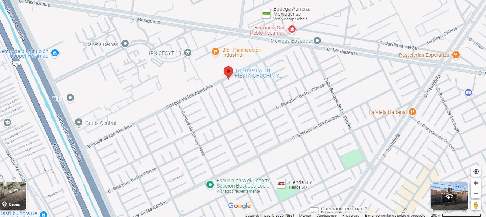

Además de ofrecer una amplia variedad de dulces y materias primas, la Dulcería Chuchin y Diana se especializa en catering para eventos especiales como cumpleaños y bodas. Destaca por crear experiencias culinarias únicas y deliciosas, adaptadas a los gustos individuales de los clientes.
InformacionOfrecer diversos servicios que se ajustan a las necesidades del cliente entre estos encontraras una gran variedad.
Buscamos adaptarnos a las necesidades de nuestros clientes, siendo un punto de referencia en la comunidad.
Calidad. Integridad. Innovación. Compromiso comunitario. Atención al cliente.
Dulcería Chuchin y Diana C. Bosque de los abedules, Mz 86 Lt 7 Cs. 2, C.P. 55764, Tecámac, México.

Te esperamos de brazos abiertos.